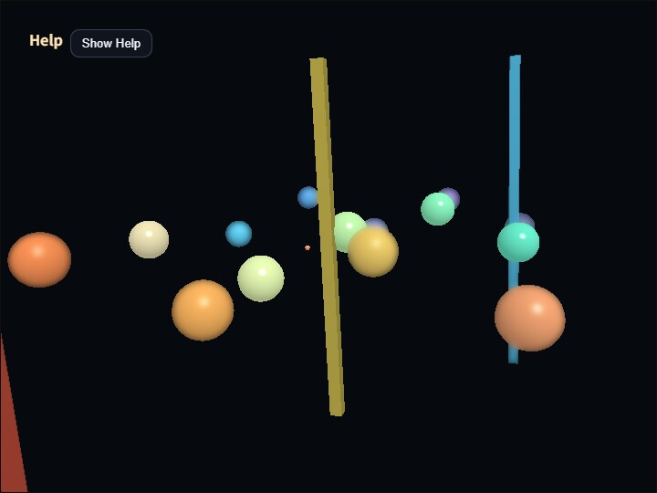

dof
English | 日本語

概要
- DofPass を使って、3D scene を一度 offscreen RenderTarget へ描いたあと、depth を参照して focus 面だけ sharp に残す最小の被写界深度サンプルです。
- SeparableBlurPass を bloom 以外でも再利用できることを確認するためのサンプルです。
- WebgApp は起動と overlay表示に使い、3D scene 本体は autoDrawScene: false で postprocess 経由の描画に切り替えています。
- blur 元になる sceneTarget には、通常の forward 描画結果をそのまま入れます。つまり材質色だけではなく、直接光の diffuse / specular も含んだ scene color をぼかします。これにより、blur画像へ切り替わった瞬間に specular highlight だけが消える不自然さを避けています。
- 床は置かず、近距離 / 焦点付近 / 遠距離に小さめの球を多めに配置し、focus 面の移動を見分けやすくしています。
- 現在の focusDistance には十字状の小さな guide を 3D scene 内へ置き、debug view を開かなくても focus 面の位置を追いやすくしています。
- CommandPalette 上の Focus Range は、
compute_dofと同じく blur stage 1つ分の距離幅として扱います。DofPass も同じ stage 幅仕様で scene color から small / medium / large の3段階blurへ順に移るため、焦点から少し外れた場所でも急に強いボケへ飛びにくくしています。 - 既定では多段階ぼかし（staged blur）を使い、small / medium / large の blur texture を depth差に応じて段階的に選びます。これがこの sample の標準経路です。
- 多段階ぼかしの 3 段階blur は同じ解像度で3枚作るのではなく、small は基準解像度、medium はその約 0.7 倍、large は約 0.5 倍の offscreen target で生成します。大きいblurほど低解像度でも破綻しにくい性質を利用して、見た目を保ちながら fill cost を下げる構成です。
- small / medium / large の blur iteration はそれぞれ
1 / 2 / 4を既定値にしています。小さいblurほど iteration を増やしても表示品質の改善が少ないため、stage ごとに必要な反復だけを使う構成です。 - CommandPalette の benchmark page から
Benchを実行すると、DOF Off / Staged S1 / Staged S2 / Staged Full / Staged Halfを自動で順に測定し、平均値と各frameの記録を JSON として download できます。Staged S1は small blur だけ、Staged S2は small + medium までを使う比較用 case です。測定中は比較条件を揃えるため、view はcompositeに固定されます。 - CommandPalette の Background で背景色を切り替え、黒背景で目立つbloom状のにじみや、明るい背景での境界の見え方を比較できます。
- 初期値は
compute_dofと比較しやすい軽めのボケを確認しやすい設定にしており、CommandPalette 上ではfocusRange=7.0、Focus Hold=0.35、maxBlurMix=1.0、full quality、stage blur iteration1 / 2 / 4、blurRadius=2.0を使います。 - 球の geometry は unit sphere を 1 回だけ作り、各 node は Shape instance と uniform scale で半径差を表す構成にしているため、色だけを変えつつ mesh build の重複を避けています。
- 操作説明と負荷表示は buildHelpPanelOptions() と showOverlayPanel() を使って左上の畳める help panel へ出し、各DoF設定値は CommandPalette の toggle / stepper / select 上で直接確認できるようにしています。
実行方法
- 実行ファイルは ./dof.html です
- WebGPU に対応したブラウザで開き、必要に応じて help panel と CommandPalette を合わせて確認してください
- CommandPalette は canvas のダブルタップ、または
/キーで開きます。background、focus distance、focus range、blur radius、stage別iterationなどの現在値を見ながら変更できます。Help panelにはFrame timingも表示されるため、見た目と負荷を同じ画面で比較できます。
使用している webg 機能
- WebgApp: Screen / Shader / Space / Input / Message の初期化と overlay表示
- buildHelpPanelOptions() + showOverlayPanel(): 左上の help panel を標準形式で生成し、操作説明の表示 / 非表示を切り替える
- CommandPalette: canvas のダブルタップまたは
/キーで開く設定パネルを作り、DoF設定の現在値を表示しながら変更する - Shape.createInstance(): unit sphere の shared resource を再利用し、色違いの球を individual material + node scale で並べる
- RenderTarget(sampleDepth=true): 3D scene の color と depth を後段 pass から読めるようにする offscreen 描画先
- EyeRig(type="orbit"): depth 配置を見回すオービット視点
インスタンス化の観測結果
- インスタンス化前
vertexCount=12252
triangleCount=22436
boneCount=0
nodeCount=27
shapeCount=23
meshCount=23
- インスタンス化後
vertexCount=681
triangleCount=1156
boneCount=0
nodeCount=27
shapeCount=23
meshCount=4
- shapeCount が変わらないのは、scene に置いている球の個数そのものは同じだからです
- meshCount、vertexCount、triangleCount が大きく減るのは、unit sphere の geometry を 1 回だけ build し、その shared resource を複数の Shape instance が再利用するためです
確認ポイント
- CommandPalette の DOF toggle で DOF の ON / OFF を切り替えると、focus 面から外れた球ほど blur されることを確認します
- カメラを回したときも床で視界が隠れず、複数の小球が前後の層として見えることを確認します
- CommandPalette の Focus Dist を動かしたとき、sharp に見える深度帯が前後へ移動することを確認します
- CommandPalette の Focus Dist を動かしたとき、3D scene 内の十字 guide も同じ距離へ前後移動することを確認します
- 左上の help panel に操作説明が表示され、Hide Help を押すと Show Help ボタンだけが残り、Show Help で再表示できることを確認します
- CommandPalette の Focus Range を動かしたとき、blur stage 1つ分の距離幅が狭く / 広く変わることを確認します
- CommandPalette の Blur Radius や stage別iterationを変えたとき、focus 外のにじみ方とGPU負荷がどう変わるかを確認します
- CommandPalette の Max Blur を変えたとき、blur を scene にどこまで強く混ぜるかが変化することを確認します
- CommandPalette の Quality で full / half blur quality を切り替えたとき、small / medium / large の各 blur target サイズがまとめて変わり、見え方と負荷がどう変化するかを確認します
- CommandPalette の Stage Cnt を
1 / 2 / 3で切り替えたとき、多段階ぼかしの段階数に応じて見え方と負荷がどう変わるかを確認します - CommandPalette の benchmark page で
WarmupとSamplesを調整し、Bench実行後にJSONから測定結果を保存できることを確認します - CommandPalette の View で composite / scene / depth / focusMask / stageMask / blurSmall / blurMedium / blurLarge を切り替え、depth の分布、focus 面の mask、3段階blurのどこが使われるか、各 blur texture そのものを直接確認できることを確認します
focusMask は compute_dof と同じ色分けで、合焦を 0、手前を -1 / -2 / -3、奥を 1 / 2 / 3 として表示します
stageMask は scene / small / medium / large を別の色で示し、どの段階が選ばれているかを確認できます
- CommandPalette の Background を切り替え、背景色によってblurの色漏れや合焦境界の見え方が変わることを確認します
操作方法
- 左上 help panel の Hide Help / Show Help: 操作説明本文の表示 / 非表示
- canvas のダブルタップ、または
/: CommandPalette の表示 / 非表示 - ドラッグ / 矢印キー: オービットカメラ回転
- ホイール / [ / ]: ズーム
- CommandPalette 1ページ目: DOF ON/OFF、Staged、Focus Dist、Focus Range、Focus Hold。Focus Range は blur stage 1つ分の距離幅です
- CommandPalette 2ページ目: Blur Radius、Max Blur
- CommandPalette 3ページ目: View、Background、Quality、Small Iter、Medium Iter、Large Iter、Stage Cnt、Curve、Reset
- CommandPalette 4ページ目: Bench、JSON、Warmup、Samples